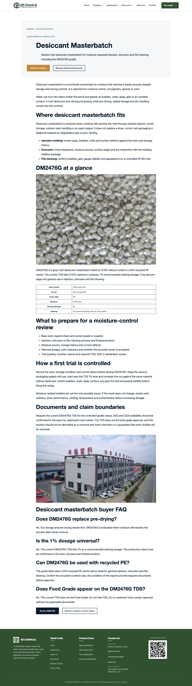
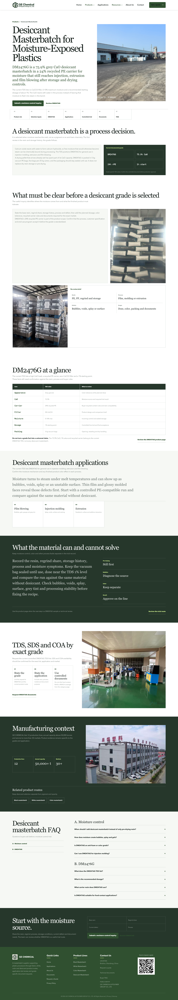
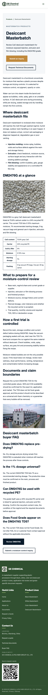
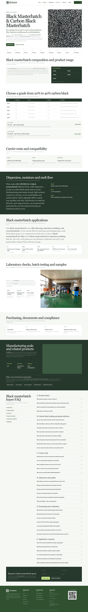

Current page uses the generic category body template. Proposed page follows the Black Masterbatch category rhythm: image-led hero, section index, product facts, application routes, controlled trial, documents, factory context, FAQ and final inquiry.



